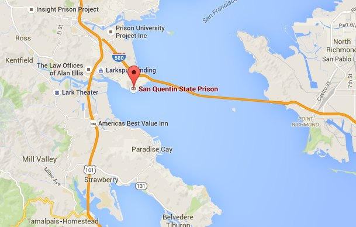
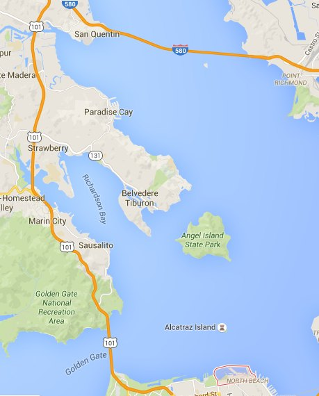

The race will begin near San Quentin, run to Fisherman's wharf, swim to Alcatraz island and back and then bike around San Francisco bay, crossing the John T. Knox freeway and ending where the race began.
You will be able to park at San Quentin prison. Please plan to arrive early to avoid traffic.
The Prison to Prison Triathlon will be taking place on June 1st 2016 at 8am. Register now before the race is full!
The Prison to Prison Triathlon costs $100. This includes a Prison to Prison Triathlon t-shirt, and other goodies from our sponsors.
This race will be near Half Ironman, consisting of: a run of roughly 16 miles, a challenging swim of 3 miles and a scenic cycling course of 25 miles.
Here is a map of the race:
Packet pickup will be held at the San Quentin Prison on May 30th and 31st from 9am to 9pm. Please plan accordingly, there will not be packet pick-up on the day of the race. You can send someone to pick up your packet for you, but they must have a copy of your confirmation email. You can also have your packet mailed to you if necessary.